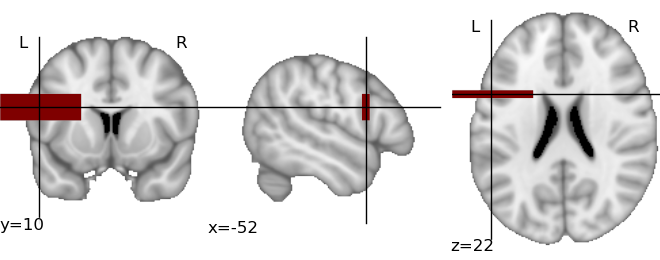

Plotting of activation maps¶
The module nipy.labs.viz provides functions to plot
visualization of activation maps in a non-interactive way.
2D cuts of an activation map can be plotted and superimposed on an anatomical map using matplotlib. In addition, Mayavi2 can be used to plot 3D maps, using volumetric rendering. Some emphasis is made on automatic choice of default parameters, such as cut coordinates, to give a sensible view of a map in a purely automatic way, for instance to save a summary of the output of a calculation.
Warning
The content of the module will change over time, as neuroimaging volumetric data structures are used instead of plain numpy arrays.
An example¶
from nipy.labs.viz import plot_map, mni_sform, coord_transform
# First, create a fake activation map: a 3D image in MNI space with
# a large rectangle of activation around Broca Area
import numpy as np
mni_sform_inv = np.linalg.inv(mni_sform)
# Color an asymmetric rectangle around Broca area:
x, y, z = -52, 10, 22
x_map, y_map, z_map = coord_transform(x, y, z, mni_sform_inv)
map = np.zeros((182, 218, 182))
map[x_map-30:x_map+30, y_map-3:y_map+3, z_map-10:z_map+10] = 1
# We use a masked array to add transparency to the parts that we are
# not interested in:
thresholded_map = np.ma.masked_less(map, 0.5)
# And now, visualize it:
plot_map(thresholded_map, mni_sform, cut_coords=(x, y, z), vmin=0.5)
This creates the following image:
The same plot can be obtained fully automatically, by letting
plot_map() find the activation threshold and the cut coordinates:
plot_map(map, mni_sform, threshold='auto')
In this simple example, the code will easily detect the bar as activation and position the cut at the center of the bar.
nipy.labs.viz functions¶
|
Plot three cuts of a given activation map (Frontal, Axial, and Lateral) |
3D plotting utilities¶
The module nipy.labs.viz3d can be used as helpers to
represent neuroimaging volumes with Mayavi2.
|
Plot a 3D volume rendering view of the activation, with an outline of the brain. |
|
3D anatomical display |
For more versatile visualizations the core idea is that given a 3D map and an affine, the data is exposed in Mayavi as a volumetric source, with world space coordinates corresponding to figure coordinates. Visualization modules can be applied on this data source as explained in the Mayavi manual
|
Make a Mayavi source defined by a 3D array and an affine, for which the voxel of the 3D array are mapped by the affine. |